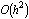
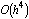
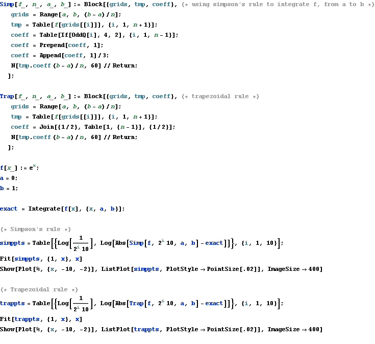
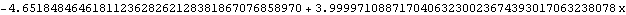
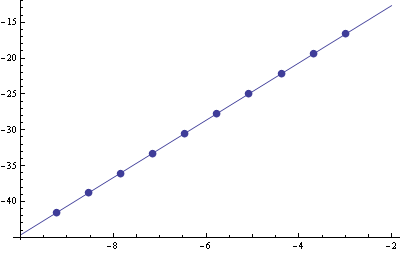
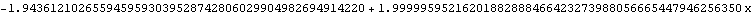
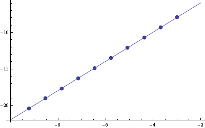

The Error Introduced by The Trapezoidal Rule, And Simpson’ Rule
12/14/2010  
The log-log plot shows that the trapezoidal rule has an error convergence rate of
The function of the line that best fits the points (log h, log |error|) is given.




